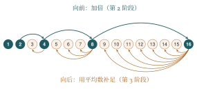

STEP II 1993，第 8 题
继续之前，请先阅读题目（原题为英文）。题目载于 STEP Support Programme 的题目资料库： step.maths.org/questions/93-s2-q8
引子
算术平均—几何平均不等式（arithmetic mean–geometric mean inequality，简称 AM–GM）也许是数学中最有用的一条不等式。它说的是：对于正数，普通的平均数总是不小于“乘法意义下的平均数”，而且只有当所有数都相等时，等号（equality）才成立。它不用微积分就能解决最优化（optimisation）问题，可以用来证明其他不等式，并且在分析学（analysis）的每一个分支中都会出现。
这道题用一种奇特而优美的归纳法（induction）来证明它，这个方法由柯西（Augustin-Louis Cauchy）于 1821 年提出。它不是由 \(n\) 走到 \(n + 1\)，而是由 \(2\) 跃到 \(4\)，再到 \(8\)、\(16\)，只涵盖 \(2\) 的幂，然后掉头往下走，把中间的数补上。它提醒我们，“归纳法”这个想法远比课本上的版本灵活。
动笔之前
网上试题库所载的这份试卷有一处误植：它写的是“\(b_1 = a_2\)”。那当然应该是 \(b_1 = a_1\)；意思是 \(b\) 这一列数就是 \(a\) 那一列数，再用它们的平均数的若干个副本补足。
为甚么由 \(2^m\) 个数走到 \(2^{m+1}\) 个数，可能比由 \(n\) 走到 \(n + 1\) 容易？
因为 \(2^{m+1}\) 个数可以自然地分成两组，每组 \(2^m\) 个；你可以对每一半应用归纳假设（inductive hypothesis），然后用两个数的情形把两半合起来。由 \(n\) 走到 \(n + 1\)，就没有这样对称的结构可供利用。
逐步解题
阶段 1 两个数
\(\left( \frac{a_1 + a_2}{2} \right)^2 - a_1 a_2 = \frac{a_1^2 + 2a_1a_2 + a_2^2 - 4a_1a_2}{4} = \frac{(a_1 - a_2)^2}{4} \geq 0.\)■
阶段 2 加倍
\(m = 1\) 的情形就是第 1 阶段。假设 \((*)\) 对 \(2^m\) 个数成立，现取 \(2^{m+1}\) 个正数。
把这 \(2^{m+1}\) 个数分成前半和后半，设 \(P\) 和 \(Q\) 分别为两半的算术平均。归纳假设对每一半说了甚么？
对每一半应用 \((*)\)， \[a_1 \cdots a_{2^m} \leq P^{2^m} \qquad\text{及}\qquad a_{2^m + 1} \cdots a_{2^{m+1}} \leq Q^{2^m}.\] 两式相乘（所有数都是正数），全部 \(2^{m+1}\) 个数的积不大于 \((PQ)^{2^m}\)。现在由两个数的情形得 \(PQ \leq \left( \frac{P + Q}{2} \right)^2\)，而 \(\frac{P + Q}{2}\) 正好是全部 \(2^{m+1}\) 个数的平均数。所以 \[a_1 \cdots a_{2^{m+1}} \leq (PQ)^{2^m} \leq \left( \frac{P + Q}{2} \right)^{2^{m+1}} = \left( \frac{a_1 + \cdots + a_{2^{m+1}}}{2^{m+1}} \right)^{2^{m+1}},\] 这就是 \(m + 1\) 时的 \((*)\)。由归纳法可知，只要项数是 \(2\) 的幂，AM–GM 就成立。■
阶段 3 填补空隙
现在取任意的 \(n\)，并选取 \(m\) 使得 \(2^m > n\)。我们在数列 \(a_1, \ldots, a_n\) 之后补上 \(2^m - n\) 个它自己的平均数 \(A\)。
补足后的数列 \(b_1, \ldots, b_{2^m}\) 的平均数是多少？
其总和为 \((a_1 + \cdots + a_n) + (2^m - n)A = nA + (2^m - n)A = 2^m A\)，所以平均数就是 \(A\) 本身。加入平均数的副本并不会改变平均数。因此，对 \(b\) 这一列数应用 \((*)\)，得 \[a_1 \cdots a_n \cdot A^{2^m - n} \leq A^{2^m}.\]
完成这个证明。
两边同除以 \(A^{2^m - n}\)（这是正数）：\(a_1 \cdots a_n \leq A^n\)。取 \(n\) 次方根， \[(a_1 \cdots a_n)^{1/n} \leq A = \frac{a_1 + \cdots + a_n}{n}. \qed\]
回顾
沿另一条路径作归纳。第 2 阶段是对 \(m\) 作归纳，涵盖 \(n = 2, 4, 8, \ldots\)；第 3 阶段则是由任何一个 \(2\) 的幂往下走到任何较小的 \(n\) 的方法（图 3.2.1）。
用平均数补足。把数列加长而不改变其平均数，这个技巧值得记住；它能把关于任意 \(n\) 的问题，化为关于一个方便的 \(n\) 的问题。
等号何时成立？沿着证明往回追溯，等号成立需要每一次使用两个数的情形时等号都成立，而这只有在所有数都相等时才会发生。

背后的数学
柯西在他的《Cours d’analyse》（1821）中发表了这个证明；我们在第 2 章谈过，正是这本书开创了分析学的严格处理。这种技巧现在称为向前—向后归纳法（forward–backward induction）：先对无穷多个情形组成的一个序列（这里是 \(2\) 的幂）证明命题成立，然后证明 \(n\) 的情形蕴含 \(n - 1\) 的情形。两者合起来，就能到达每一个 \(n\)。我们的第 3 阶段是由 \(2^m\) 直接跳到 \(n\)，但你也可以一步一步来：在 \(n - 1\) 个数之后补上一个它们的平均数，就能证明 \(n\) 的情形蕴含 \(n - 1\) 的情形。
一条不等式，多种证明
AM–GM 有数十种证明，把它们互相比较，是认识不同数学风格的好方法。
利用凸性（convexity）。对数（logarithm）函数是凹（concave）函数，所以对数的平均不大于平均的对数。取指数之后，这就是 AM–GM；这也是 第 3.3 节 的主题。
波利亚（George Pólya）的证明。利用 \(e^{x - 1} \geq x\)（\(e^{x-1}\) 在 \(x = 1\) 处的切线位于曲线下方）。设 \(A\) 为平均数，把这条不等式应用于每一个 \(a_i/A\)，然后相乘：\(\prod \frac{a_i}{A} \leq e^{\sum (a_i/A - 1)} = e^0 = 1\)。波利亚说这个证明是他在梦中想到的。
利用磨光法（smoothing）。如果其中两个数不相等，就把它们都换成两者的平均数。算术平均不变，而由两个数的情形可知，乘积会增大。重复这个步骤，所有数就会被推向平均数。
不用微积分的最优化
AM–GM 能把许多最优化问题变成一行就能解决的问题。在表面积固定的所有长方体盒子当中，哪一个体积最大？在周界固定的所有长方形当中，哪一个面积最大？（是正方形，由两个数的情形可知：\(xy \leq \bigl(\frac{x+y}{2}\bigr)^2\)，等号当 \(x = y\) 时成立。）等号成立的条件告诉你最优值在哪里出现，而不等式则告诉你那确实是最优值，而不仅仅是一个驻点（stationary point）。可与 第 3.1 节 中的告诫比较。
思维技巧
归纳法不一定要按 \(1, 2, 3, \ldots\) 的次序进行。只要一条路径能到达每一个情形，你就可以沿着它作归纳：可以加倍，可以用强归纳法（strong induction），也可以先在一个子数列（subsequence）上向前走，再向后走以填补空隙。
当由 \(n\) 到 \(n+1\) 这显而易见的一步难以走通时，不妨问问哪一步会容易走，以及能否靠这一步到达每一个情形。
延伸练习
后退一步。补上一个平均数的副本，直接证明：若 AM–GM 对 \(n\) 个数成立，则它对 \(n - 1\) 个数也成立。
一个递增数列。把 AM–GM 应用于 \(1 + \frac1n, \ldots, 1 + \frac1n, 1\) 这 \(n + 1\) 个数（其中 \(1 + \frac1n\) 有 \(n\) 个），证明 \(\left(1 + \frac1n\right)^n < \left(1 + \frac{1}{n+1}\right)^{n+1}\)。
最好的盒子。一个密封的长方体盒子的表面积为 \(S\)。把 AM–GM 用于三个不同的面的面积，证明其体积不大于 \((S/6)^{3/2}\)，等号在盒子为正方体时成立。
调和平均（harmonic mean）。把 AM–GM 应用于 \(1/a_i\) 这些数，证明调和平均 \(\dfrac{n}{1/a_1 + \cdots + 1/a_n}\) 不大于几何平均。
延伸阅读
J. Michael Steele, The Cauchy–Schwarz Master Class（Cambridge University Press）。一本以问题带动、讲不等式的出色著作，正好由这个程度起步。第 2 章讲的就是 AM–GM。
Hardy, Littlewood & Pólya, Inequalities（Cambridge University Press）。经典参考书，由二十世纪三位伟大的分析学家撰写。
Arthur Engel, Problem-Solving Strategies（Springer）。第 7 章收录了大量来自数学奥林匹克的不等式题目。